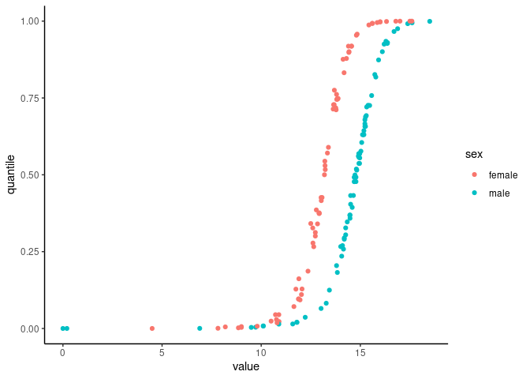

labNorm provides functions for normalizing standard laboratory measurements (e.g. hemoglobin, cholesterol levels) according to age and sex. These normalizations are based on the algorithms described in the research paper “Personalized lab test models to quantify disease potentials in healthy individuals”.
This package allows users to easily obtain normalized values for their lab results and to project them on the population distribution. It can use reference distributions from Clalit HMO or UKBB. For more information go to: https://tanaylab.weizmann.ac.il/labs/
Installation
You can install the development version of labNorm from GitHub using the remotes package:
retmotes::install_github("tanaylab/labNorm")Example
Normalize hemoglobin values for a group of subjects:
library(labNorm)
# Add a column for the normalized values
hemoglobin_data$quantile <- ln_normalize(
hemoglobin_data$value,
hemoglobin_data$age,
hemoglobin_data$sex,
"Hemoglobin"
)
head(hemoglobin_data)
#> age sex value quantile
#> 1 20 male 9.39 0.01882213
#> 2 20 male 14.03 0.18674720
#> 3 20 male 14.44 0.27947363
#> 4 20 male 15.80 0.75195053
#> 5 20 female 12.06 0.24249167
#> 6 20 female 12.89 0.57451617Plot the quantiles vs values for age 50-60:
library(ggplot2)
library(dplyr)
#>
#> Attaching package: 'dplyr'
#> The following objects are masked from 'package:stats':
#>
#> filter, lag
#> The following objects are masked from 'package:base':
#>
#> intersect, setdiff, setequal, union
hemoglobin_data %>%
filter(age >= 50 & age <= 60) %>%
ggplot(aes(x = value, y = quantile, color = sex)) +
geom_point() +
theme_classic()
Plot the age/sex distribution of Hemoglobin:
ln_plot_dist("Hemoglobin")